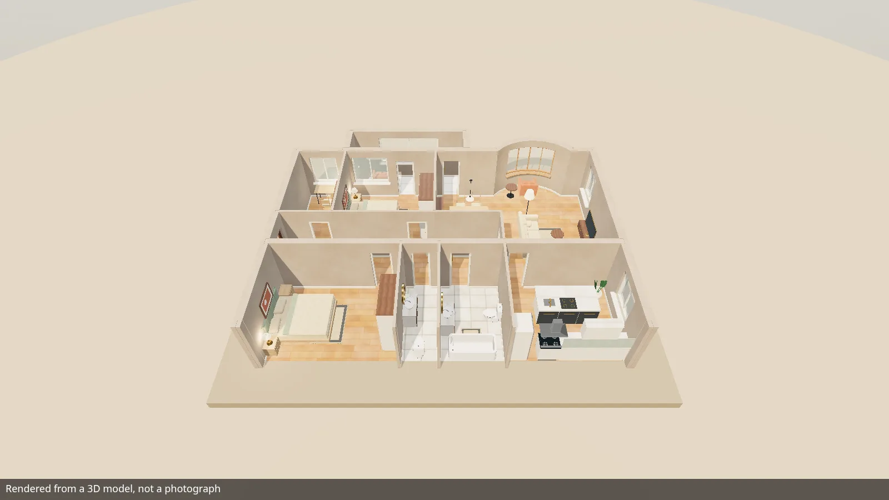

Open source · Apache-2.0
An open-source 3D tour player for your website.
Five views of one apartment — a 2D plan, a 3D top view, a 360 orbit, a walk and a guided tour — on your own page, embedded as a custom element, an ES module or an iframe.
- Three.js bundled in, no script loaded at runtime
- Read-only for visitors by default
- Keyboard and screen-reader operable

For your AI agent
Give this to your AI agent.
Paste the prompt into the coding agent that works on your site. It leads the agent to llms.txt, the index of this site, and from there to install.md, the step-by-step instruction: build the player from source, copy the files to your site, embed it and check that it runs.
Install the JEEX Player on my website. Follow the instructions at https://player.jeex.org/llms.txt
Five views, one scene
Every view draws the same scene.
The player renders one scene document — walls, openings, rooms, furniture and finishes — and the visitor switches between five views of it in the control bar.
-
2D
2D plan
The floor plan as a drawing, with room names, areas and facade dimension lines, and a marker where the camera stands.
-
3D
3D top view
The same plan in three dimensions, seen from above.
-
360
360 orbit
The dollhouse: rotate, pan and zoom around the whole apartment.
-
Walk
Walk
A person at eye height. Click a floor point to walk there or use W A S D; walls and closed doors stop you.
-
Tour
Guided tour
A route through the rooms with play, pause and a scrub bar, and fully drivable from your own script.
- Interactive doors — they open on approach and close behind the walker
- Mini-map with click-to-travel — in walk and tour
- Interior presets — a preset button when the scene carries them
- Stills and panoramas — rendered beside the live view, each with its provenance
Put it on your site
Three ways in, one set of options.
All three paths share the same option names, the same handle API and the same events. In the snippets, /jeex-viewer/ is where your own site serves its copy of the built dist-lib/ files, and the scene is the demo apartment from this site, there for trying the player.
-
Custom element
Plain HTML: one script tag and the element, no inline code. A classic-script build registers the same element for a CMS that strips
type="module".<!-- /jeex-viewer/ is your site's copy of dist-lib/ --> <script type="module" src="/jeex-viewer/jeex-viewer-element.js"></script> <!-- the demo apartment, for trying the player; your own scene goes here --> <jeex-viewer src="https://player.jeex.org/demo/demo-apartment.json" lang="en"></jeex-viewer>
-
ES module
mountViewermounts the player into a container of yours and hands back a handle for playback, modes and captures. The container needs a height; the viewer fills it.// /jeex-viewer/ is your site's copy of dist-lib/ import { mountViewer } from '/jeex-viewer/jeex-viewer.js'; const viewer = mountViewer(document.getElementById('apartment'), { // the demo apartment, for trying the player; your own scene goes here scene: { url: 'https://player.jeex.org/demo/demo-apartment.json' }, view: { mode: 'walk', minimap: true }, }); await viewer.ready;
-
iframe
Any page that allows an iframe; the viewer runs on its own origin. A small host helper adds postMessage control on top: play, seek, switch modes, listen to events.
<!-- /jeex-viewer/ is your copy of dist-lib/; ?scene= is the demo apartment --> <iframe src="/jeex-viewer/embed.html?scene=https%3A%2F%2Fplayer.jeex.org%2Fdemo%2Fdemo-apartment.json&lang=en" title="Apartment tour" loading="lazy" allow="fullscreen" style="display:block;width:100%;aspect-ratio:16/9;border:0"></iframe>
- Your origin serves the built files — the whole
dist-lib/directory, because the ES entries import hashed sibling chunks - Your scene URL answers with CORS —
access-control-allow-origin, fetched without credentials - The demo apartment is for trying it out — for your property you make your own apartment's scene
- Built from source —
bun run build:libin a checkout of the repository
Make it yours
Your page decides what the player shows.
What the player shows is set by mount options on your page: an object key, an attribute or a query parameter.
-
Player controls
Show or hide the control bar, the mode switcher, the status pill, the hint card and the brand block one by one, or pick a preset:
kiosk,embed,unbranded. -
Theming
Ten documented custom properties (accent, surface, text, radius, font, colour scheme and more), set on the viewer's own
.jeex-viewerroot, plus seven shadow parts for the rest. -
Languages
Seven complete catalogues ship: English, German, French, Italian, Spanish, Serbian (Latin script) and Russian. The German, French, Italian and Spanish ones were machine-translated from the English source; corrections are welcome. Add your own with
registerLocale. -
Keyboard
The canvas is focusable: W A S D or the arrows walk or pan. Every control in the chrome is its own tab stop with a visible focus ring.
-
Reduced motion
By default the player follows
prefers-reduced-motion: an engaged tour opens paused and scripted travel lands at once.motionforces either way. -
Strict CSP
Runs under
default-src 'self'with nounsafe-inline; the stylesheet arrives throughadoptedStyleSheets, and swatches needimg-src data:.
Practical questions
Before you embed it.
Where do scenes come from?
The player loads a scene document (schema 2.2: walls, openings, rooms, furniture, finishes) or a baked project.json. A JSON Schema generated from the same type ships with the library build. The player does not create scenes; it validates, renders and plays them. You make your own apartment's scene; to try the player first, load the demo apartment at https://player.jeex.org/demo/demo-apartment.json.
What do I have to host?
The built files on one origin: the whole dist-lib/ directory for the custom element and the ES module, or the built embed.html with its assets for an iframe. And the scene: a URL that answers with CORS and a Content-Type of application/json, at most 8 MB.
Which browsers does it support?
The stylesheet is built for Chrome and Edge 123, Firefox 120 and Safari 17.5, the first versions that ship light-dark(). That is the configured CSS floor of the build, not a list of tested devices. The scene is drawn with WebGL.
Is it free?
The player is licensed under Apache-2.0: you may use, change and redistribute it under the licence's terms. The terms are in LICENSE and NOTICE at the root of the repository.
Can I install it from npm?
Not yet. The package is not published to a registry; the documented route is a build from source, described step by step in the integration guide.
Does it show the JEEX name?
The control bar's brand block is an option (brand="0" turns it off). A project whose manifest carries a mark shows a small «Made with JEEX» link in the corner; that comes from the published data, and no option removes it.
Open source
Read it, run it, change it.
The player's repository is jeex-player; the package and the element are named jeex-viewer. Issues and contributions are welcome on GitHub.
- Sourcegithub.com/jeex-org/jeex-player
- LicenceApache-2.0
- IssuesReport a bug or ask a question
- ContributingHow to send a change
- ChangelogWhat changed, release by release
This site and its demo were built from viewer commit {{VIEWER_SHA}}.